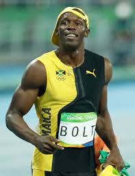
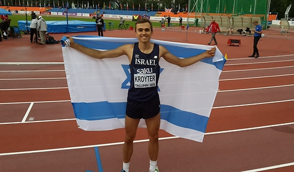
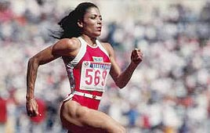
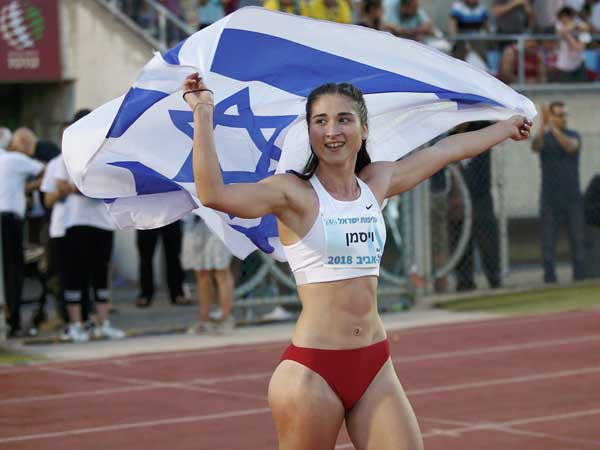

טבלה על הנושא
אני בחרתי להציג את שיאי ה - 100 מטרים בריצה מכיוון שזה המקצה האהוב עלי בתחרויות
| מקצה | שיאי עולם בריצה | שיאי ישראל בריצה |
|---|---|---|
| 100m men |
יוסיין בולט - 9:58
 |
אלכסנדר פורחומובסקי - 10.2
 |
| 100m woman |
פלורנס גריפית ג'וינר - 10.49
 |
דיאנה ויסמן - 11.25
 |